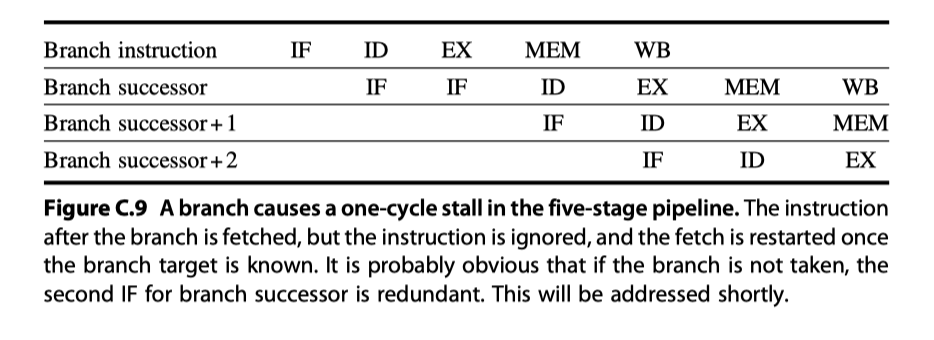
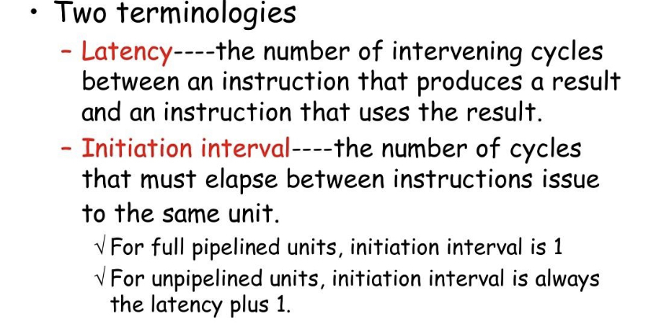
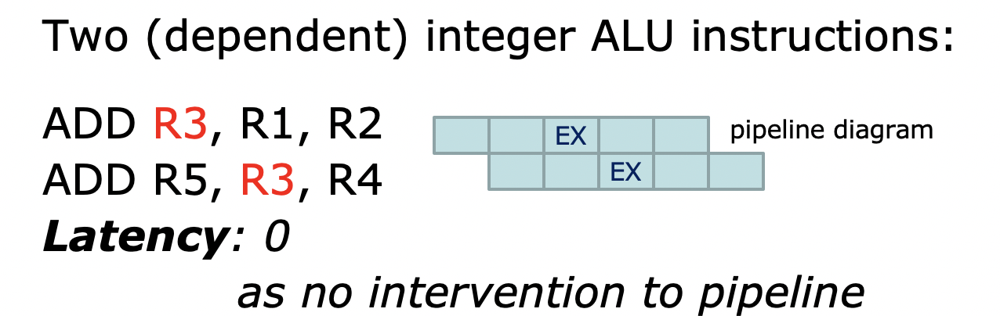
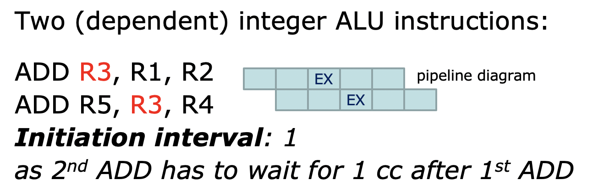
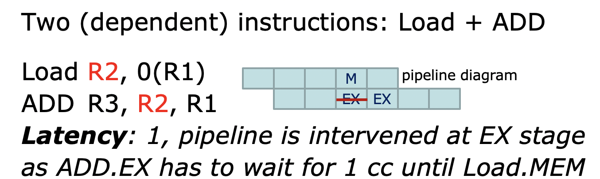
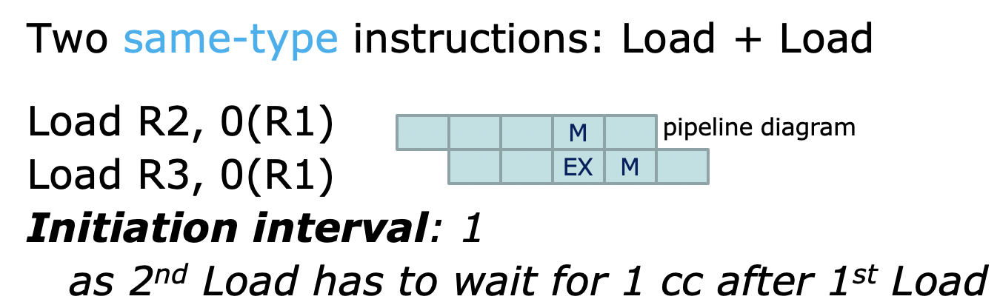

CA - Pipeline
附录C流水线
1 什么是流水线
流水线是一种将多条指令 重叠执行 的实现技术
一条执行包含多种操作，流水线充分利用了这些 操作之间的并行性
为了能更形象地理解这个问题，不妨用汽车装配线来做类比
汽车装配线的每一环节负责一项任务，所有环节是并行的（也就是不同的汽车同时在不同的环节上）
在流水线中，指令就像是一辆待装配的汽车，不同环节完成指令的一部分,这些环节的每一步称为 流水级或者流水段。流水级前后相连形成流水线
汽车装配线的 吞吐量 定义为单位时间生产的汽车数量，由完整汽车退出装配线的频率决定
流水线的吞吐量由指令退出流水线的频率决定。一条指令在流水线中下移一步需要的时间为 处理器周期 。因为各个环节同时执行，所以处理器周期由最缓慢的流水线级确定。
可以想见，要使流水线性能高，平衡各流水线级很重要
因为处理器周期由最缓慢的流水线级确定，我们想要使最缓慢环节的加快，就要平衡各流水线级。 [木桶原理]
如果各级达到完美平衡，那么每条指令在流水线处理器中的时间为
在这些条件下，流水线加速比=流水级的数目
2 RISC指令集
我们以RISC指令集为例来了解一下流水线实现。一下，我们会介绍RISC指令集以及没有流水线的实现方式。
RISC指令集子集中每条指令都可以在5个时钟周期以内实现。以MIPS指令集为例介绍这5个时钟周期
- 指令提取周期(IF(Instruction Fetch))
- 指令译码/寄存器提取周期(ID)
- 执行/有效地址周期(EX)
- 存储器访问(MEM)
- 写回周期(WB)
http://web.cs.iastate.edu/~prabhu/Tutorial/PIPELINE/DLXimplem.html
3 RISC处理器经典五级流水线
在RISC流水线中，多条指令的执行重叠不会引入多少冲突，因为以下三点
A.
使用分离的指令存储器和数据存储器。
这样做是因为指令提取和数据访问都需要访问存储器，会引发冲突，所以分离指令和数据存储器。
注意：如果流水线处理器时钟周期=多周期处理器时钟周期，存储器需要提供5倍带宽
B.
两个阶段使用了寄存器堆：ID阶段decode, WB阶段writeback写入
因此，每个时钟周期寄存器需要两次读取(A=Reg[rs], B=Reg[rt]) 和一次写入
为了出气对相同寄存器堆多次读取和一次写入，我们在时钟周期的前半部分写寄存器，后半部分读寄存器
C.
程序计数器在IF阶段要递增
ID阶段要计算潜在的分支目标。若分支在ID改变程序计数器？
除了要确保流水线中的指令不会在相同时间使用相同的硬件资源，还要确保不同流水级的指令不会互相干扰。这是通过在流水级之间引入 流水线寄存器来实现的。将一个给定的流水级得出的结果存储到流水线寄存器，并在下一个时钟周期作为下一个流水级的输入。
4 流水化的主要阻碍-流水线冒险
冒险降低来了流水化所能带来的理想加速比
冒险共有一下三类
结构冒险
在重叠执行模式下，硬件无法同时支持指令的所有可能组合，就会出现资源冲突 [比如大家都想访问存储器]
数据冒险
指令之间存在先后顺序，一条指令取决于先前指令的结果
控制冒险
分支指令以及其他改变程序计数器的指令会导致控制冒险
为了避免冒险，要求流水线中的一些指令延迟时，其他指令能够继续执行 。
这里讨论的流水线，当一条指令被stall时，在指令停顿之后发射的所有指令也会被停顿，之前发射的指令不会被停顿
4.1 带有停顿的流水线性能
$
流水化加速比=\frac{非流水化指令平均执行时间}{流水化指令平均执行时间}$
$=\frac{非流水化CPI\times 非流水化时钟周期}{流水化CPI\times 流水化时钟周期}$
$=\frac{非流水化CPI}{流水化CPI}\times \frac{非流水化时钟周期}{流水化时钟周期}$
流水化处理器的理想CPI几乎总是等于1，算上停顿
$
流水化CPI=理想CPI+每条指令的流水线停顿时钟周期$
$=1+每条指令的流水线停顿时间周期$
所以
如果所有指令周期数相同，等于流水级数目(流水线深度)，那么非流水化CPI=流水线深度
所以，如果没有流水线停顿，加速比=流水线深度
4.2 结构冒险
i. 什么是结构冒险
指令重叠执行需要实现功能单元的流水化和资源的复制，以允许在流水线中出现所有可能的指令组合
如果由于资源冲突而不能容许某些指令组合，就说出现结构冒险
ii. 解决方式
在发生结构冒险时，使流水线停顿一个时钟周期
停顿称为 流水线气泡，他们漂浮穿过流水线，占有空间但是不执行有效工作。导致CPI增大
4.3 数据冒险
i. 数据冒险是什么
有些指令依赖于之前指令的结果
DADD R1, R2, R3
DSUB R4, R1, R5
AND R6, R1, R7
OR R8, R1, R9
XOR R10,R1, R11DADD后的所有指令都用到了DADD指令的结果R1
所以在DADD的结果writeback之前，下面的指令都是不能execute的
ii. 解决方法
A. 转发(forwarding)
转发是一个什么思想呢？
DSUB需要DADD的结果x, 那么不妨DADD在算出x之后，就把结果给到DSUB需要这个x的位置，而不用等到writeback
转发的工作方式
- 来自EX/MEM和MEM/WB流水线寄存器的输入总是被反馈回ALU的输入端
- 如果转发硬件检测到前一个ALU操作已经对当前ALU操作的原寄存器进行了写入操作，则控制逻辑选择转发结果作为ALU输入，而不是选择从寄存器堆中读区的值

B, 需要停顿的数据冒险
并非所有的潜在数据冒险都可以通过转发处理
LD R1, 0(R2)
DSUB R4, R1, R5
AND R6, R1, R7
OR R8, R1, R9More about data dependences and hazards
A. data dependences
- 数据相关[真数据相关]
指令i生成的结果可能会被指令j用到
指令j数据相关于指令k, 指令k数据相关于指令i
- 名称相关
当两条指令使用相同的寄存器或者存储器位置[称为名称]， 但与该名称相关的指令之间并没有数据流动时，就会发生名称相关。
Anti-dependence: S1 -> S2
(i) S1 executes before S2
(ii) S1 reads from a location that is overwritten later by S2
WAR
Output dependence: S1 -> S2
(i) S1 executes before S2
(ii) S1 and S2 write to the same location
WAW
由于没有在指令之间传递值, 所以antidependence和output dependence只是名称相关，不是真数据相关。改变这些指令中使用的名称[寄存器号或者存储器位置], 就可以使这些指令不再冲突。
B. data hazards
- RAW
- WAW: 对应于output dependence。 只有在前一指令stall时允许后一指令继续执行的流水线中，才会存在WAW冒险
- WAR: 对应于antidependence。
4.4 分支冒险
i. 分支冒险是什么
执行分支指令时，修改后的PC可能等于也可能不等于PC+4。
如果分支讲PC改到其目标地址，就是选中了分支；否则就是没有选中分支。一般等到ID末尾，完成地址计算和对比之后才会改变PC
那么还不知到分支指令跳到哪里，pipeline按顺序执行的指令可能不会被执行到。
ii. 解决方法
一旦在ID期间检测到分支，就对该分支之后的指令重新取值。但是这样处理的问题是，如果分支没有被选中，所以事实上已经正确提取了指令，所以IF的重复没有必要

所以，如何降低流水线分支代价？
4种简单的编译时机制
A. 冻结或者冲刷流水线，保留或删除分支之后的所有指令，直到知道分支目标
B. 将每个分支看作未选中分支，允许硬件继续执行，就好像分支未被执行一样。
这种预测未选中机制的实现方式是继续提取指令，就好像分支指令时一条正常指令一样。但是，如果分支被选中，就要将已经提取的指令转化为空操作，重新开始在目标地址提取指令。
这一机制的复杂性在于要知道处理器可能何时被指令改变，以及如何撤销这种改变
C. 将所有分支都看作选中分支
只要对分支指令进行了译码并且计算了目标地址，就假定该分支被选中，开始在目标位置提取和执行。
但是在我们的五级流水线中，不可能在知道分支输出结果之前知道目标地址，所以这对我们没什么用。
D. 延迟分支
分支指令
依序后续指令[位于delay slots]
选中时的分支指令
获得编译器支持，编译器让后续指令有效并且可用
延迟调度有局限性，这个局限性是因为
- 可以排在延迟时隙[delay slots]中的指令有限制
- 编译时预测一个分支是否可能被选中的能力有限。为了提高编译器填充delay slots的能力，大多数具有条件分支的处理器引入了canceling or nullifying branch . 在取消分支中，指令包含了预测分支的方向。当分支行为和预期一致时，分支延迟时隙中的指令就想普通的延迟分支一样执行。预测错误时，分支延迟时隙中的指令转为空操作。
看一下这些不同的解决方法效率有什么差别
考虑flush pipeline
unconditional branch指的是像j, jal这种的，这些直到Decode才会知道分支目标，所以penalty=2
其他conditional，像beq等，需要EXE才知道是否要跳转，所以penalty=3
这样，考虑predicted untaken
unconditional 指令被预测不执行，但是一定会执行，代价是2
conditional的如果没有执行，和预测一致，代价为0。如果和预测不一致，代价为3
考虑predicted taken
如果和预测一致。那么在Branch指令的EXE阶段才能知道分支目标，所以要stall 2个时钟周期才能跳转
当流水线越来越深，分支的潜在代价增加，使用延迟分支是不够的。要更积极地去预测分支。静态机制[依赖编译时信息，成本低]，动态预测[依据程序特性]
i. 静态分支预测
事先收集数据，根据数据来预测分支
ii. 动态分支预测
使用分支预测缓冲区[Branch-Prediction Buffer].
这是一个cache，分支指令地址的低位部分用来索引，所有访问都会hit。
这个存储器包含一个bit来标示这个分支最近是否被选中。这个bit可以用来为接下来的这条分支提供指导。如果预测结果和bit不一致，反转bit; 一致则不反转
但是只有1bit来标示会存在一点问题，比如分支一直被选中，但是某一次没有被选中，bit也会反转，这种反转其实没有必要，会影响效率。
所以这里提出了2位预测机制。
两位预测机制，预测必须连续错过两次才会进行修改。
5. 如何实现流水线
MIPS CPU多周期实现
Basic Pipeline
i. IF
IF/ID.IR = Mem[PC]; //取指令
if((EX/MEM.opcode == branch) && EX/MEM.cond) {
IF/IR.NPC = EX/MEM.ALUOutput;
PC = EX/MEM.ALUOutput;
} else {
IF/IR.NPC = PC + 4;
PC = PC + 4;
}ii. ID
ID/EX.A = Regs[IF/ID.IR[rs]];
ID/EX.B = Regs[IF/ID.IR[rt]];
ID/EX.NPC = IF/ID.NPC;
ID/EX.IR = IF/ID.IR;
ID/EX.Imm = sign-extend(IF/ID.IR[immediate]);iii. EX
A. ALU EX
EX/MEM.IR = ID/EX.IR;
执行以下之一
1. EX/MEM.ALUOutput = ID/EX.A func ID/EX.B;
2. EX/MEM.ALUOutput = ID/EX.A op ID/EX.ImmB. Load Store EX
EX/MEM.IR to ID/EX.IR;
EX/MEM.ALUOutput = ID/EX.A + ID/EX.imm;
EX/MEM.B = ID/EX.B;C. Branch EX
EX/MEM.ALUOutput = ID/EX.NPC + (ID/EX.Imm << 2);
EX/MEM.cond = (ID/EX.A == 0);iv. MEM
A. ALU MEM
MEM/WB.IR = EX/MEM.IR;
MEM/WB.ALUOutput = EX/MEM.ALUOutput;B. Load Store MEM
MEM/WB.OR = EX/MEM.IR;
1. MEM/WB.LMD = Mem[EX/MEM.ALUOutput];
2. Mem[EX/MEM.ALUOutput] = EX/MEM.B;v. WB
A. ALU WB
1. Regs[MEM/WB.IR[rd]] = MEM/WB.ALUOutput;
2. Resg[MEM/WB.IR[rt]] = MEM/WB.ALUOutput;B. Load Store WB
For load only
Regs[MEM/WB.IR[rt]] = MEM/WB.LMD;Control the Pipeline
instruction issue:
一条指令从ID移入EX的过程
对于整数流水线，所有数据冒险都可以在ID进行检查。
如果存在数据冒险，这个指令将会在issue之前停顿。
同样，我们可以确定在ID期间需要哪种转发，并设定适当的控制。
pipeline overhead
due to stage imbalance, pipeline register setup
Deal with forwarding
6. 扩展MIPS流水线，以处理多周期操作
扩展mips流水线，以处理浮点运算
浮点运算的问题
要求所有浮点运算在1个周期内完成时不现实的，甚至2个时钟周期都不太可能
如果想要在一个时钟周期内完成，就必须降低clock rate, 或者增加大量的逻辑单元。
所以
- 为了完成操作，EX周期可能要根据需要重复多次
- 可能存在多个浮点功能单元，如果待发射指令会导致浮点所用功能单元的结构冒险，或者数据冒险，就会出现停顿。
4个独立的功能单元
- 主整数单元，处理load, store, 整数ALU operation, branch
- 浮点与整数乘法器
- 浮点加法器，处理浮点加、减和转换
- 浮点和整型除法器
假定这些功能单元的执行级没有实现流水化
两个指标
latency
the number of intervening cycles between an instruction that produces a result and an instruction that uses the result. 一条指令产生结果后，下一条指令等待多久才可以使用这个结果。注意，是等待。
Essentially, pipeline latency is 1 cycle less than the depth of the execution pipeline, which is the number of stages from the EX stage to the stage that produces the result
initiation/repeat interval
同一类型的指令执行之间必须间隔的周期数。比如，integer ALU的一条指令开始执行，下一条integer ALU指令需要在他后面一个周期才能开始执行

instruction issue: 从ID到EX的阶段
|  |  |
|  |  |
本博客所有文章除特别声明外，均采用 CC BY-SA 4.0 协议 ，转载请注明出处！